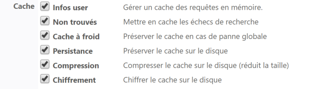

Principe
Vous pouvez créer une base Invités SQL si vous souhaitez autoriser des utilisateurs non présents dans l'annuaire de l'organisation à imprimer ponctuellement, (par exemple, un partenaire de passage, un stagiaire, un prestataire missionné pour une durée déterminée, etc.).
Cette base Invités (Guest)) repose sur une table SQL et peut être alimentée et gérée depuis la Console de Supervision (cf. Gérer la base Invités).
Propriétés
Pour configurer la
-
Type : sélectionnez dans la liste le type base de données invités (SQL) ;
-
Identifiant : saisissez l'identifiant qui correspond au nom du domaine qui s'affiche dans une boîte d'authentification sous forme "DOMAIN\LOGIN". Généralement, l'annuaire invité porte l'identifiant Invités ou guests ;
-
Description : si nécessaire, complétez les informations d'informations qui ne seront visibles que des administrateurs.
-
Alias : si nécessaire, ajoutez un alias à l'annuaire paramétré afin de le retrouver plus facilement qu'à l'aide de son identifiant.
Connexion
Les informations saisies permettent d'établir la communication entre Watchdoc et la base de données :
-
Type : sélectionnez le type de la base (SQL Server, Postgresql ou SQLite) ;
-
Serveur SQL : indiquez le serveur où est localisée la base SQL. Cliquez sur le bouton pour Parcourir votre espace de travail afin d'y sélectionner le serveur parmi les serveurs SQL détectés dans votre réseau ;
-
Authentification : sélectionnez le mode d'authentification au serveru SQL : SQL Serveur ou Windows SSPI
 Interface du fournisseur de support de sécurité (Security Support Provider Interface). L'interface SSPI est une interface universelle, normalisée par l'industrie, pour les applications distribuées sécurisées.
(Source : https://learn.microsoft.com/) ;
Interface du fournisseur de support de sécurité (Security Support Provider Interface). L'interface SSPI est une interface universelle, normalisée par l'industrie, pour les applications distribuées sécurisées.
(Source : https://learn.microsoft.com/) ; -
Nom d'utilisateur : saisissez dans la zone le nom du compte utilisateur habilité à gérer la base SQL ;
-
Mot de passe : saisissez dans la zone le mot de passe du compte utilisateur habilité à gérer la base SQL ;
-
Base de données : indiquez le nom de la base dans laquelle doivent être enregistrés les comptes (watchdocstats par défaut). Cliquez sur Parcourir pour parcourir le serveur SQL déclaré précédemment afin d'y sélectionner les tables statistiques qui y sont déclarées. Par défaut, les codes PUK sont enregistrés dans la base des badges (cards).
-
Chemin : pour une base de données de type SQLite, indiquez le chemin du fichier spécifique à la base de données utilisateurs :

Code PIN
L'utilisateur dispose de plusieurs moyens d'authentification dans Watchdoc.
-
Code PIN : cochez cette case si l'utilisateur s'authentifie avec un code PIN ;
-
Algorithme : par défaut, Watchdoc génère un code PIN automatiquement si l'utilisateur n'en dispose pas. Si l'utilisateur en possède déjà un, c'est ce dernier qui est utilisé :
-
Chiffres : indiquez la longueur souhaitée du code ;
-
Variabilité : sélectionnez dans la liste la fréquence selon laquelle code PIN est renouvelé ;

Code d'impression
Indiquez dans cette section si les utilisateur inscrits dans l'annuaire peuvent s'authentifier dans Watchdoc à l'aide d'un code d'impression (code alpha-numérique qui doit contenir entre 4 et 16 caractères et ne doit pas contenir plus de 2 chiffres).
Dans la liste, sélectionnez l'un des paramètres suivants :
-
Désactivé : le code d'impression n'est pas utilisé ;
- Stocké dans les paramètres utilisateurs (en clair) : le code d'impression est enregistré en clair dans l'annuaire. L'utilisateur peut l'afficher dans sa page "Mon compte" et peut également en générer un nouveau ;
-
Stocké dans les paramètres utilisateurs (hashé) : le code d'impression est enregistré de manière sécurisée dans la base Json.db. L'utilisateur ne peut pas l'afficher dans la page "Mon compte", mais il peut en générer un nouveau.

Avancé
-
Journalisation - Enregistrer les requêtes SQL dans le journal de l'application : cochez la case si vous souhaitez garder une trace des requêtes SQL dans un fichier dédié.
Durée de vie du cache
Watchdoc peut conserver un cache des informations propres aux utilisateurs afin d'accélérer le temps de traitement. Les informations saisies permettent de définir la durée de conservation des caches.
-
TTL Infos : saisissez le temps (en secondes, minutes, heures ou jours), de la durée de conservation des informations utilisateurs.
-
TTL NotFound : saisissez le temps (en secondes, minutes, heures ou jours), de la durée de conservation des informations relatives aux utilisateurs qui se sont authentifiés dans l'application Watchdoc que cette dernière n'a pas trouvés dans l'annuaire.

Cache
Watchdoc peut conserver en cache les requêtes sur l'annuaire afin d'en accélérer l'exécution.
Par défaut, la durée de vie (TTL La durée de vie (TTL - Time To Live) est la durée pendant laquelle un objet est stocké dans un système de mise en cache avant d’être supprimé ou actualisé.) des données d'annuaire mise en cache est de 72 heures.
La durée de vie (TTL - Time To Live) est la durée pendant laquelle un objet est stocké dans un système de mise en cache avant d’être supprimé ou actualisé.) des données d'annuaire mise en cache est de 72 heures.
Cochez les cases des caches que vous souhaitez activer :
-
Infos user : cochez cette case pour activer le cache relatif aux informations utilisateurs.
-
Non trouvés : cochez cette case pour activer le cache relatif aux utilisateurs dont le compte n'a pas été trouvé.
-
Cache à froid : cochez cette case pour conserver un cache des données "froides", c'est-à-dire des données déjà vérifiées mais expirées.
-
Persistance : cochez cette case pour permettre de conserver le cache sur le disque afin de le retrouver en cas de redémarrage du service Watchdoc.
-
Compression : cochez cette case pour activer la compression du cache sur le disque. Il est fortement recommandé d'activer ce paramètre afin de réduire la taille du fichier quand la persistance est activée.
-
Chiffrement : cochez cette case pour chiffrer le fichier de cache sur le disque afin d'en sécuriser le contenu.

Badges
Badges : si les utilisateurs disposent d'un badge, sélectionnez dans la liste l'annuaire duquel ils proviennent (base de données WSC Cards / Badges par défaut).
Lorsque la notification par e-mail est activée, Watchdoc doit disposer de l'adresse mail des utilisateurs pour communiquer avec eux. Ce paramètre indique à Watchdoc où trouver l'adresse mail des utilisateurs :
-
stockée dans l'annuaire :sélectionnez cette option si l'adresse mail est enregistrée dans un attribut de l'annuaire ;
-
le compte utilisateur sert également d'adresse e-mail : sélectionnez cette option pour que Watchdoc crée l'adresse mail en concaténant le nom du compte de l'utilisateur avec un nom de domaine DNS. Dans ce cas, précisez le nom de domaine DNS à ajouter au nom de l'utilisateur lors de la concaténation ;
-
rechercher l'adresse dans un annuaire alias : optez pour ce choix si l'adresse e-mail est enregistrée dans un annuaire Alias. Dans ce cas, sélectionnez l'annuaire dans lequel sont enregistrées les e-mails. (Pour configurer un annuaire de codes PUK, cf. Configurer un annuaire SQL de codes PUK) :

Fusible
Les annuaires utilisateurs sont généralement hébergés sur un contrôleur de domaine ou serveur distant, accessible via le réseau local. En cas de panne réseau ou de ralentissement important, cela peut provoquer, par effet de cascade, un blocage ou ralentissement du serveur d'impression.
Il peut alors être utile d'activer un "fusible logique", qui se déclenche en cas de ralentissement majeur du système, afin de stopper les requêtes envoyées au serveur défaillant pour éviter une surcharge de travail.
Dans les champs, saisissez les valeurs au-delà desquelles Watchdoc cesse d'envoyer des requêtes au serveur d'annuaire :
-
Erreurs max. : il s'agit du nombre d'erreurs "graves" successives tolérées. Une erreur "grave" est, par exemple, un problème de communication réseau, un timeout, un dysfonctionnement du serveur distant. Ces erreurs sont généralement rares et peuvent parfois se régler naturellement (fin d'une période de pointe, redémarrage du serveur distant). Les erreurs "logiques" (comme un échec d'identification, de syntaxe ou de configuration de l'annuaire) sont ignorées.
-
Durée max. : il s'agit de la durée moyenne maximale tolérée pour l'exécution des 10 dernières requêtes. En cas de fort ralentissement du serveur distant (période de pointe, timeout réseau,...), cette durée est rallongée.
-
Requêtes max. : il s'agit du nombre maximum de requêtes en parallèle autorisées. En cas de forte charge de travail, le serveur distant peut ne pas être capable de répondre à un grand nombre de requêtes simultanées.
-
Délai attente : après déclenchement du fusible, délai d'attente avant réactivation. Au terme de ce délai, Watchdoc relance les requêtes afin de "sonder" l'état du serveur. Si les requêtes aboutissent, le fusible est réactivé, sinon il attend à nouveau l'expiration du délai. A tout moment, l'administrateur peut manuellement désactiver le fusible. Le fusible reste alors coupé jusqu'à ce qu'il soit réactivé manuellement. Pensez à utiliser cette fonctionnalité afin de tester l'impact d'une panne sur le serveur d'impression.

Les valeurs généralement saisies pour l'activation du fusible dans un environnement multi serveur (Master) sont les suivantes :
-
erreurs max : 5
-
requêtes max : 5
-
durée max : 30 secondes
-
délai attente : 120 secondes
Print clients
-
Ne pas utiliser cet annuaire : cochez cette case pour que Watchdoc Print Client n'utilise pas cet annuaire

Validation de la configuration
Cliquez sur le bouton  Créer pour valider la configuration de votre annuaire.
Créer pour valider la configuration de votre annuaire.
Et après ?
Une fois la base des Invités déclarée comme annuaire, vous pouvez l'intégrer comme sous-annuaire dans l'annuaire META (cf. Déclarer et configurer un annuaire META).